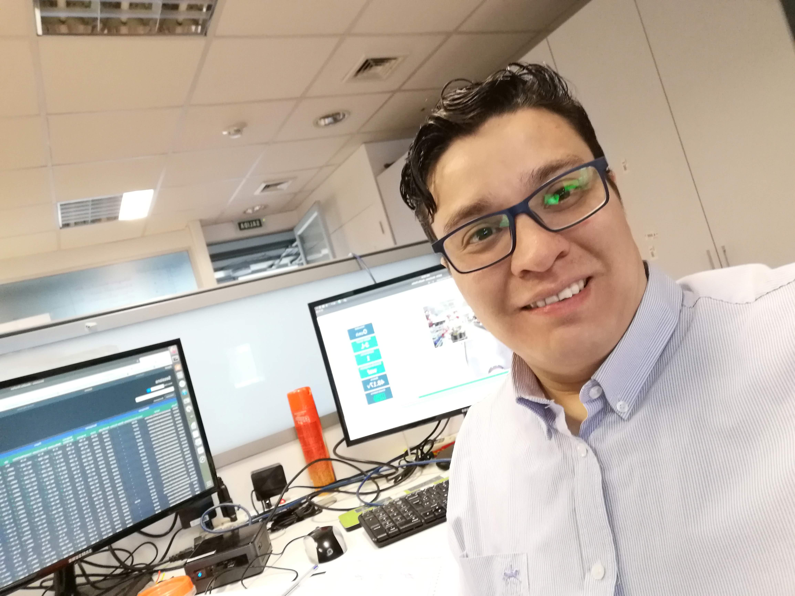

CV Marcos Lamoza

Contacto
+569 40291061
Correo: lamoza.hernandez@gmail.com


Resumen
Técnico profesional en Electricidad y Automatización Industrial Titulado con Certificación SEC Clase B,
experiencia en Mantenimiento Preventivo y Correctivo en sistemas eléctricos y Electronicos, Circuitos de Alumbrado o Fuerza,
protecciones y seguridad. Además, cuento con experiencia en Programación, usando lenguaje de programacion
en bloques, C y arduino. Configuración de redes, diseño e implementación de sistemas eléctricos en BT, sólida base
en uso de Office y sistemas Operativos. Con alta capacidad de liderazgo, trabajo en equipos entusiasta y ordenado.
Informacion Personal
- RUT: 17668043-1
- Licencia de conducir: Clase B
- Nacionalidad: Chileno
- Fecha de Nacimiento: 28 de Mayo 1991
- Estado Civil: Soltero
- Direccion: En santiago, Michiva #2969, Puente Alto
Formacion Academica
- Enseñanza Media: Centro Educacional Lincoln College. Generacion 2008
- Estudios Superiores: Tecnico en Electricidad y Automatizacion Industrial. Generacion 2019. DUOC UC
Certificaciones
- Electronica y Comunicacion
- Instrumentacion y Mecanica Industrial
- Representacion Grafica de Procesos
- Mantenimiento e Inspeccion de Obra
- Calculo y Diseño de protecciones y Mallas a Tierra
Experiencia Laboral
- Empresa: Zippedi SPA
Cargo: Monitoring Technical L2
Febrero 2020 al Presente
Labores: Mantenciones Preventivas y Correctivas en circuitos eléctricos y electrónicos a los Robot de la empresa,
comprobar funcionamiento, Implementación y desarrollo de los proyectos roboticos. Detectar fallas y entregar soluciones
y mejoras a los robots manteniendo la totalidad de la flota operativa.
- Empresa: Kdoce SPA
Cargo: Encargado de Operaciones
Mayo 2019 a Enero 2020
Labores: Levantamiento de información para Planificar e implementar Sistemas Eléctricos en BT y MT en establecimientos
educaciones a lo largo de chile. Bajo norma de calidad y NCH.4/2003 y sus Anexos Definidos por normativa chilena vigente SEC.
Planificar mediante carta Gantt cumpliendo entregas en los tiempos establecidos.
Gestión de compras e insumos entre otras actividades del cargo.
- Empresa: Sodexo Chile - Contrato Clinica Santa Maria
Cargo: Tecnico Electrico
Agosto 2018 a Mayo 2019
Labores: Mantenciones Preventivas y Correctivas en circuitos eléctricos, tableros de control, fuerza y alumbrado, mantenimiento
a equipos industriales y/o Equipos médicos verificar fallas eléctricas, asistir incidencias del cliente interno, mediciones
eléctricas, termografías entre otras.
Portafolio